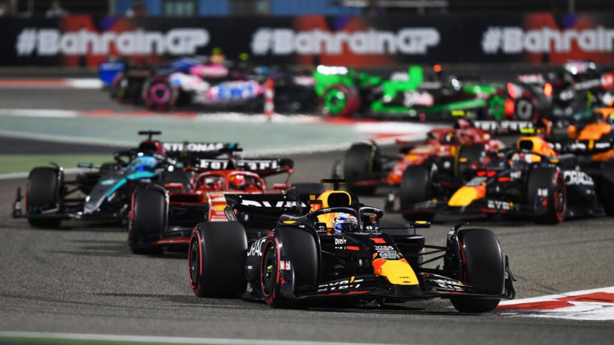
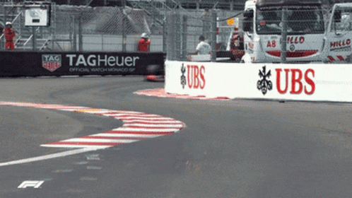
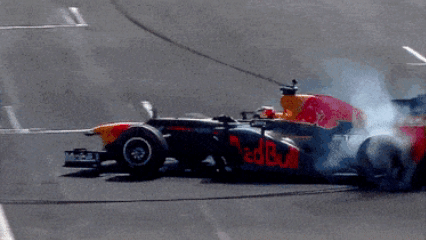
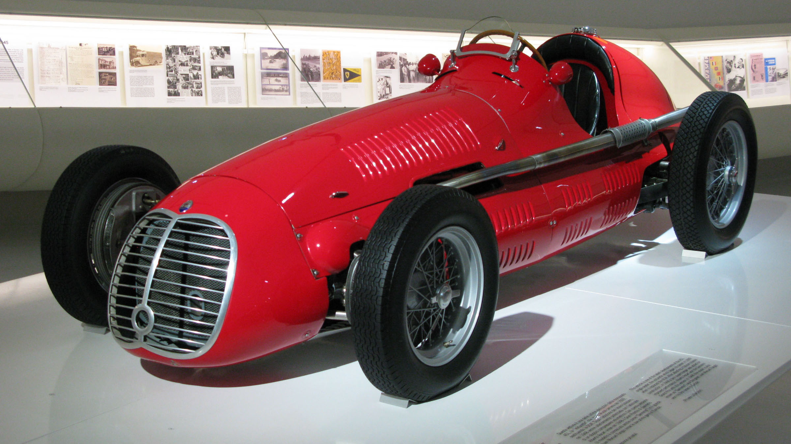

«Формула-1» (повна назва: «Чемпіонат світу ФІА» — англ. FIA Formula One World Championship) — чемпіонат світу з кільцевих автоперегонів на автомобілях з відкритими колесами, який відбувається під егідою Міжнародної автомобільної федерації (FIA). Перш за все «формула» — це термін, який визначає набір правил, які обов'язкові до виконання всіма учасниками перегонів.
Чемпіонат світу у класі «Формула-1» відбувається щороку і складається з Гран-прі, або етапів, які проводяться на спеціально побудованих трасах або підготовлених вулицях міста. Наприкінці сезону, за підсумками всіх гонок визначається переможець чемпіонату. У «Формулі-1» змагаються як окремі пілоти, так і команди. Пілот-переможець отримує титул чемпіона світу, а команда-переможець отримує Кубок конструкторів.
Результати кожної траси оцінюються за допомогою системи балів для визначення двох щорічних чемпіонатів світу, один для водіїв F1 і один для конструкторів F1. Автогонщики, конструктори команди, спортивні чиновники, організатори та схеми повинні бути володарями дійсних Супер Ліцензії, найвищого класу гоночних ліцензії, виданої FIA.
Команди учасники змагань «Формули-1» використовують гоночні автомобілі («боліди») власного виробництва. Тому для кожної команди вкрай важливо мати не лише швидкого і стабільного пілота та гарну стратегію, але й надзвичайно сильний конструкторський відділ. Наразі боліди «Формули-1» розвивають швидкість до 360 км/год (хоча в останні роки FIA намагалась зменшити швидкість, впроваджуючи нові технічні правила), та здатні витримувати у поворотах перевантаження до 5 g. Кількість обертів двигуна обмежена до 15 000 об/хв, проте слід зазначити, що за всі роки свого існування «Формула-1» постійно змінювалася. Історично основним центром розвитку «Формули-1» є Європа. Більшість баз та дослідницьких центрів команд розташовано в цій частині світу. Однак сфера спорту значно розширилася в останні роки, і дедалі більше число Гран-прі проводяться в інших частинах світу.


Передумови гонок «Формули-1» з'явилися у 1920-х та 1930-х роках на перегонах Гран-прі Європи. Перед Другою світовою війною організаціями, які брали участь у Гран-прі, було сформульовано перший регламент чемпіонату. Планувалося, що він почне діяти у 1941 році, але через війну, що почалася, ці правила набули чинності лише у 1946 році.
Сформована FIA (Міжнародна автомобільна федерація) у 1946 році подала остаточно сформовані правила «Формули-1», які набули чинності у 1947 році. Цей рік і вважають початком ери «Королівських автоперегонів — Формула-1». Саме цього року відбулися змагання у класі «Формула А», який передбачав робочий об'єм атмосферних двигунів до 4500 см³, а оснащених компресором — до 1500 см³. Цей клас і став прабатьком першої Формули.
Вимоги до автомобілів класу «Формула А» дозволяли брати участь у перегонах автомобілям довоєнної розробки, таким як «Alfa-Romeo-158» або «Maserati-4CL».

